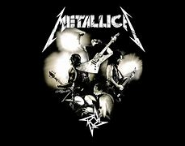
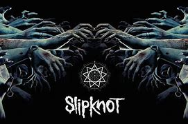

by TPS SENA
|   |
Rock al Parque es un festival internacional de rock que se lleva a cabo en la ciudad de Bogotá,
Colombia, desde el año 1994.
Es el festival gratuito y al aire libre más grande de Hispanoamérica e Iberoamérica y el tercero más grande del mundo.
Hace parte de la serie de los Festivales Al Parque impulsados por la Secretaría Distrital de Cultura, Recreación y Deporte;
es el más antiguo y el que comenzó el ciclo de festivales
metallica es una banda estadounidense de rock originaria de Los Ángeles,
pero con base en San Francisco desde febrero de 1983. Fue fundada en 1981
en Los Ángeles por Lars Ulrich y James Hetfield, a los que se les unirían
Dave Mustaine y Ron McGovney. Estos dos músicos fueron después sustituidos por el guitarrista
Kirk Hammett y el bajista Cliff Burton respectivamente, Dave Mustaine fue despedido un año
después de ingresar en la banda debido a su excesiva adicción al alcoholy su actitud violenta
Slipknot es una banda estadounidense de metal alternativo formada en 1995 en Des Moines, Iowa, Estados Unidos.
Desde el año 1999 hasta 2010 mantuvo su formación más exitosa después de diversos cambios en la misma.
Sus integrantes en la actualidad son Corey Taylor, Craig Jones, Jim Root, Mick Thomson, Shawn Crahan y Sid Wilson.
Slipknot es conocida por las máscaras